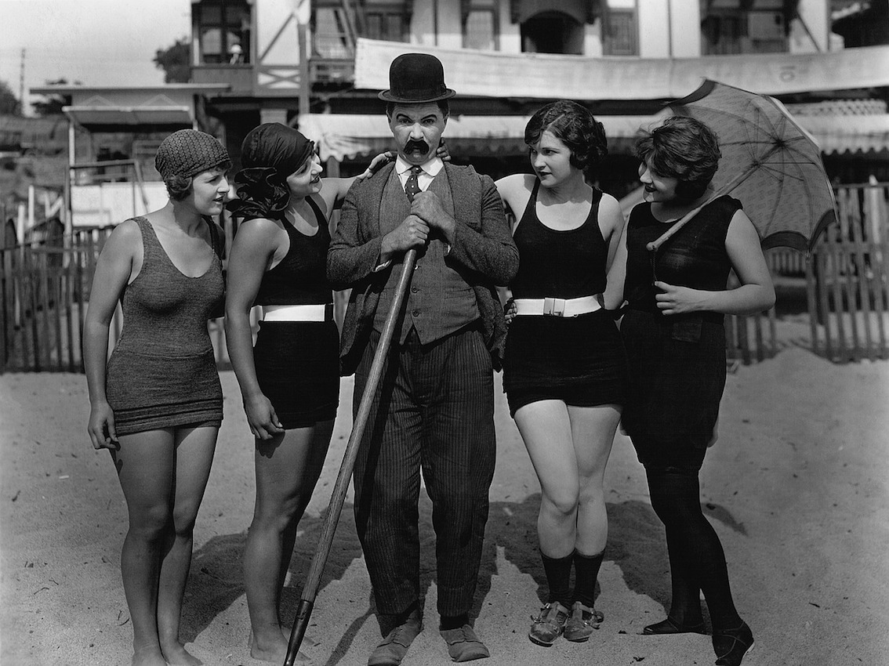

Since, the actors were unable to communicate with emotion, dialogue and speech, actors and actresses relied on body language and facial expressions so the audience could glence character and situational details from the performances. The acting shown in silent projected films was more than just phisical. Therefore, silent movies provided us many silent movie stars, sunch as Charlie Chaplin, Harold Lloyd and many more.
The actors
Charlie Chaplin
Charlie Chaplin was a British actor who became one of the biggest stars of the 20th century's silent-film era. Born on April 16, 1889, in London, England. He was famous for his character "The Tramp," the sweet little man with a bowler hat, mustache and cane, Charlie Chaplin was an iconic figure of the silent-film era and one of film's first superstars.
Harold Lloyd
Lloyd’s stage career began at the age of 12. In 1913 Lloyd moved with his father to Los Angeles. There he tried really hard to break into show business. He started to take any small roles he could get. Lloyd was one of the most popular and highest-paid stars of his time. While his achievements have been overshadowed by the work of contemporaries Charlie Chaplin and Buster Keaton, he made more films than the two of them combined.
Rudoph Valentino

Rudolph Valentino was born on May 6, 1895. He was an Italian-American film actor. After immigrating to the United States in 1913, Valentino moved to Hollywood, taking up small film roles. Valentino captured the attention of screenwriter June Mathis, who believed that he was the perfect choice for the lead in The Four Horsemen of the Apocalypse (1921).
Edna Purviance
Edna was an American movie actress of the silent film era, who played opposite Charlie Chaplin in more than 30 films. Her role varied from film to film. Purviance almost always appeared as Chaplin’s love interest, bringing a heartfelt gentleness and soft blonde beauty to her roles that sweetly complemented the chaos of Chaplin’s tramp character.
Liliane Gish
Lillian’s film debut came in 1912, when she and her sister starred in An Unseen Enemy under the direction of D.W. Griffith. Not only was Lillian Gish born in the right era, but she was also born with the ethereal beauty and grace to make her a star in the silent film industry.